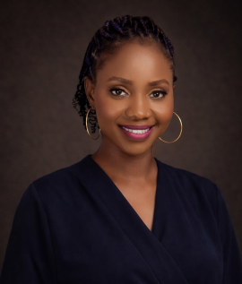

Vivian Okosun | WDD 130

Hello! my name is Vivian Okosun and I am from Lagos, Nigeria. I enjoy learning and trying out new things, I also enjoy touring and taking pictures.

Hello! my name is Vivian Okosun and I am from Lagos, Nigeria. I enjoy learning and trying out new things, I also enjoy touring and taking pictures.